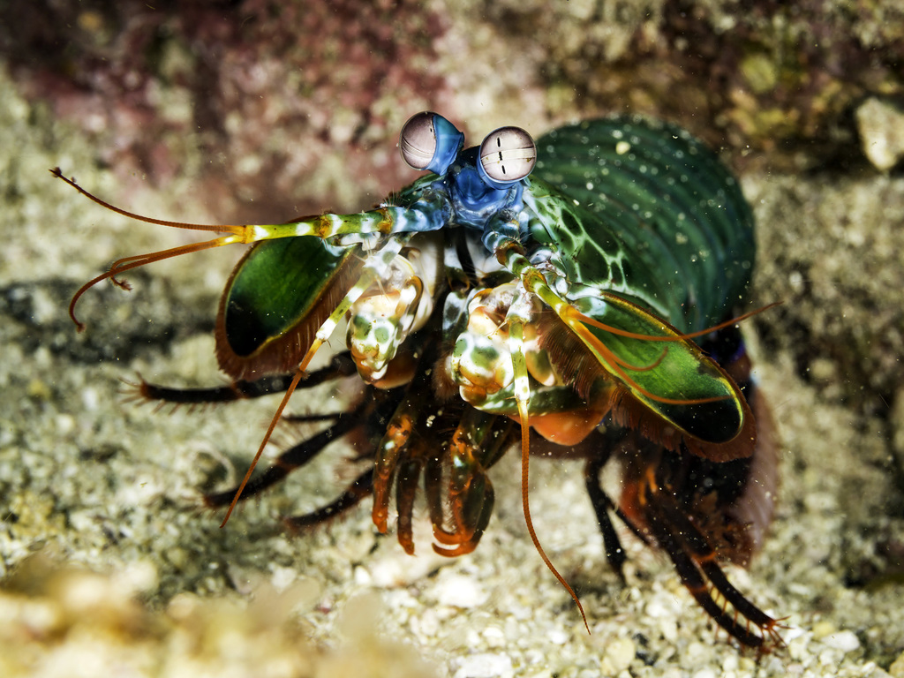
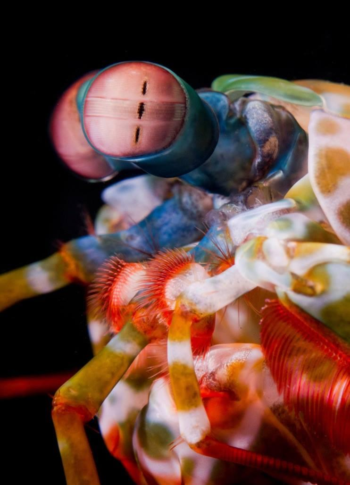

Fatos sobre o Stomatopoda
Aspectos Gerais
Stomatopoda (ou estomatópode), chamados popularmente de tamarutacas ou de lacraias-do-mar
no Brasil,
é uma ordem de crustáceos marinhos da subclasse Hoplocarida, que agrupa cerca de 400
espécies. Seu nome científico é
Odontodactylus scyllarus e são pertencentes ao grupo Animalia,
filo Arthropoda e subfilo Crustacea. Sua principal característica é a morfologia
da segunda pata
torácica, que é modificada em apêndice subquelado, lembrando uma pata de louva-a-deus.
Do que e como se alimentam

São animais exclusivamente carnívoros, alimentando-se de camarões,
caranguejos, moluscos, peixes e até mesmo outros da mesma ordem.
Os estomatópodes
são predadores ativos que caçam presas com o
auxílio de um sentido de visão muito apurado e capaz de interpretar
polarização no espectro ultravioleta e
infravermelho. O segundo par de
patas, muito desenvolvido, é usado tanto para atacar a presa como para
se defender.
Um soco poderoso

As maiores esmagadoras, tais como exemplares de Odontodactylus scyllarus,
são capazes de desferir um dos mais rápidos e violentos
golpes do reino animal,
um soco que pode apresentar a velocidade de um tiro calibre .22 (equivalente
a 720 km/h) e uma pressão de impacto de 600 N/cm².
Essa força esmagadora
é a responsável pelo seu título de "lagosta-boxeadora" e é capaz de facilmente
quebrar a carapaça de um caranguejo, as
conchas duras e calcificadas de
gastrópodes ou até mesmo quebrar o vidro reforçado de um aquário.
Visão multiespectral
Esses animais possuem o mais complexo sistema de visão de cores do mundo animal,
pois enxergam 12 cores primárias, correspondentes
aos 12 pigmentos distintos presentes
em sua retina. Para se ter uma noção, nós humanos possuímos 3 cones receptores (azul,
vermelho e verde),
enquanto os estomatópodes possuem 12 cones sensíveis a luz e
outros 4 que filtram a luz, totalizando 16 cones!.Com isso, eles são
capazes de verem
cores polarizadas e imagens multiespectrais.
Referências: WikipédiA The Oatmeal